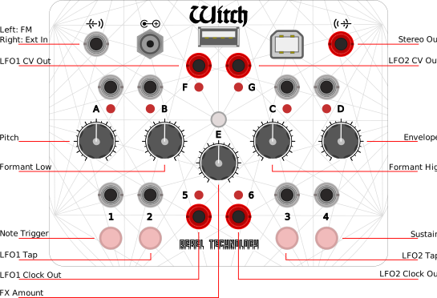

Intro

The Witch is a compact and versatile polyphonic synthesizer.
This website is a MIDI synth editor for the Witch. Use a WebMIDI capable browser (such as Chome/Chromium) and connect your Witch with a USB cable to your computer to enable the editor functions.
The Witch comes with a set of eight factory patches, implementing four different synthesis engines:
SubTract
Virtual Analogue synthesizer with 48dB resonant low pass filter and overdrive effect.
Polyphony: 8 voices Controls: A: Oscillator Frequency B: Filter Cutoff C: Filter Resonance D: Envelope E: Overdrive Out F: LFO1 Sine Out G: LFO2 Agnesi 1: Note 2: Tap LFO1 3: Tap LFO2 4: Sustain Out 5: LFO1 Clock Out 6: LFO2 Clock In Left: Oscillator Linear FM In Right: Audio Through
VoSim
Voice Simulator formant synthesizer
Polyphony: 6 voices A: Frequency B: Formant Low C: Formant High D: Envelope E: Phaser Out F: LFO1 Sine Out G: LFO2 Agnesi 1: Note 2: Tap LFO1 3: Tap LFO2 4: Sustain Out 5: LFO1 Clock Out 6: LFO2 Clock In Left: Oscillator Linear FM In Right: Audio Through
WaveBank
Multidimensional wavetable synthesizer with x/y morphing.
Polyphony: 4 voices A: Frequency B: Morph X C: Morph Y D: Envelope E: Overdrive Out F: LFO1 Sine Out G: LFO2 Agnesi 1: Note 2: Tap LFO1 3: Tap LFO2 4: Sustain Out 5: LFO1 Clock Out 6: LFO2 Clock In Left: FM Left In Right: FM Right
The WaveBank patch loads two resources. Each contains a bank of 8 x 8 single cycle waveforms. One is for the left output channel, the other for the right. The wavebanks are standard 16-bit mono wav files, and are compatible with the popular WaveEdit software and its online library of free wavetable banks.
Envelope
CC75: Attack CC76: Decay CC77: Sustain CC78: Release
QuadSampler
Four voice sampler with resonant peaking filter
Polyphony: 4 voices A: Frequency B: Filter Center Frequency C: Filter Peak D: Decay Envelope E: LFO Rate Out F: LFO Out Out G: Decay Envelope Out 1: Sample 1 2: Sample 2 3: Sample 3 4: Sample 4 Out 5: LFO 1/4 Notes Clock Out Out 6: LFO 1/16 Notes Clock Out In Left: External audio In Right: External audio
The QuadSampler uses four samples in 16-bit mono or stereo wav file format. The samples can be replaced by the user. Use the links below to upload and store new samples.
Low Frequency Oscillators
There are two LFOs, one with a default sine output (CV output F), the other with a special Agnesi curve (CV output G), vaguely resembling a church bell. The LFO speeds are set by tap tempo on buttons 2 and 3, or with an input clock connected to the corresponding gate/trigger input jack.
LFO1 controls the time basis of the currently selected effect. Apart from this the LFOs are unassigned and can be patched to any function.
The LFO shapes are continuously variable between five different basic shapes. The MIDI controls for the LFO shapes are:
CC81 LFO1 shape CC82 LFO2 shape
To enable the scope and spectrogram, first select OWL-WITCH as your device microphone. Then select Scope On and, when prompted, allow the browser access to your microphone.